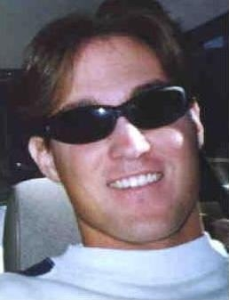

| How old are you? 23
How Tall are you? 6'2" How long have you been Skiing? 12 years Where do you live (city)? Manotick, Ontario What kinda of car do you drive? Toyota Corolla What was the first video you ever made? "Air to Spare" - an aggressive in-line skating video Where is your Favorite Place ski hill? Two: Mont Saint-Sauveur and Le Relais (both in Quebec) |
 |
How did you get into ski video making/filming? When our family first got a video camera, my brothers and I started filming everything we did in skiing, skating and surfing. When we had all the footage, we wanted to do something with it so we got into making videos. Since then, I've been trying to make them progressively better each year.
Why do you make ski videos? I enjoy making ski videos because I like to show off the good footage we got over the course of the ski season, and I also like give some lesser known amateurs a means to get their name out be be known. I would hate to get hours and hours of footage and then not use it at all.
Who is your favorite person to film and why? There are a couple of people I enjoy filming a lot. Rex Thomas is a super cool guy and when I'm filming him we have alot of fun. Also, it's fun filming the Ontario bump skiers I compete with because they're always pushing themselves when the camera is out. As well, my brothers are cool to video because they rip and they always have good ideas for angles and stuff.
Can you tell us anything cool that will happen in your next flick? Not too sure yet how the next video will be structured. I can say that so far this season we've had a lot of good new school footage and that you'll probably see more of that stuff than the bump stuff like in past videos (but I'm still going to have lots of good bump footage). You should also probably see some new unknown skiers doing some pretty sick stuff too.
How many copies of your latest video have you sold? Not too sure. I never really counted, but it's nothing big - definitely less than a hundred. Probably around 50. I don't really advertise for my videos at all - I rely on word of mouth and cool people like Paul who post reviews and whatnot.
How do you deside who to put in your video? Basically, I put all tricks that are "worthy" that I've videoed in the movie. Worthiness is determined by the quality of a particular trick (style, amplitude, degree of difficulty). I also like to put shots of some friends in too, even if their tricks aren't the best.
What do you think of SkiStorage? That site tears it up. I love seeing ski sites with cool reviews and good organization.
What do you think of Midwest New Schoolers? I've gotten to know a few of the mid-westerners and each one of them is super cool. I've had the opportunity to ski with Tom Crosbie during the summer in Blackcomb and that was a lot of fun. Props to any group of people bringing new school to the forefront of the sport.
| Check out www.engsoc.carleton.ca/~bigmike/skiing (above) this June for the release of my new video. It's gonna have some of the latest new school and bump footage ever, and will be exhibiting both familiar and unfamiliar names in skiing. Expect the same soundtrack as past videos (all punk) and the price should be the same too (real low). |